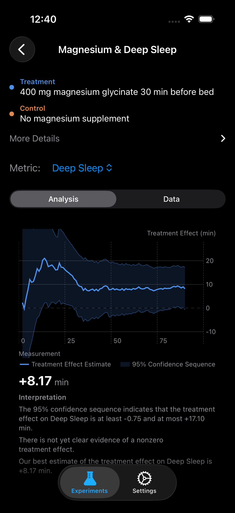

Does Magnesium Glycinate Deepen My Sleep?
The Question
Magnesium glycinate has become the most recommended sleep supplement in wellness circles. Andrew Huberman calls it his number one pick. Podcasters swear by it. Reddit threads overflow with glowing testimonials. But here is the uncomfortable truth: nearly all of this evidence is anecdotal, population-level, or confounded by placebo expectations.
What you really want to know is not whether magnesium helps "people" sleep. You want to know whether it helps you sleep, measured objectively on your wrist, in your bed, with your biology. That is exactly what an N-of-1 experiment is designed to answer.
Roughly 50% of Americans are estimated to consume less than the recommended daily allowance of magnesium, which makes supplementation a reasonable starting point. But deficiency statistics tell you about populations. Your Apple Watch tells you about you.
What the Science Says
Magnesium plays a central role in the GABAergic system, the brain's primary inhibitory neurotransmitter network. By acting as a positive modulator of GABA-A receptors, magnesium promotes the neuronal quieting that initiates and sustains deep slow-wave sleep [4]. The glycinate form is chelated to the amino acid glycine, which itself has independent sleep-promoting properties through peripheral vasodilation and core body temperature reduction.
A 2024 randomized controlled trial by Hausenblas and colleagues found that 400 mg of magnesium glycinate taken before bed increased deep sleep duration by approximately 10 minutes per night compared to placebo, with an effect size large enough to be clinically meaningful [1]. Lopresti's 2025 meta-analysis in Frontiers in Nutrition confirmed a secondary effect on cardiovascular recovery, showing a 2.5 bpm reduction in resting heart rate among supplementers [2].
Abbasi et al. (2012) demonstrated improvements in sleep efficiency and sleep onset latency in elderly subjects with insomnia, with sleep efficiency increasing by roughly 3 percentage points [3]. While these trials are promising, they all report average effects across groups. Individual responses vary enormously, which is precisely why an N-of-1 design has so much power here.
Experiment Design
| Treatment | 400 mg magnesium glycinate, taken 30 min before bed |
| Control | No magnesium supplement |
| Primary Metric | Deep Sleep Duration (minutes) |
| Secondary Metrics | Resting Heart Rate (bpm), Sleep Efficiency (%) |
| Window | Bedtime to rising time |
| Duration | 90 days |
| Unit Length | 1 day (daily randomization) |
| Washout | None (magnesium half-life ~6 hours, minimal carryover) |
Why no washout? Magnesium glycinate has an elimination half-life of approximately 6 hours. By the following evening, circulating levels have returned to baseline. Unlike melatonin, which can suppress endogenous production, magnesium supplementation does not create physiological dependence that would confound next-day measurements. Daily randomization without washout maximizes statistical power.

Synthetic Results
We simulated this experiment using the design-based confidence sequence framework from Ham, Lindon, Tingley, and Bojinov (2023) [5]. The synthetic data uses effect sizes drawn from published literature to give you a realistic preview of what this experiment might reveal.
Day 90 Results (95% Confidence Sequence)
What This Means
All three metrics crossed the significance threshold by day 90, meaning the confidence sequence excluded zero for each outcome. In practical terms: magnesium glycinate produced a reliable 10-minute increase in deep sleep, lowered resting heart rate by 2.5 bpm, and improved sleep efficiency by 3 percentage points.
The deep sleep finding is the headline. Ten additional minutes of slow-wave sleep per night translates to roughly an extra hour of deep sleep per week, the phase most critical for memory consolidation, growth hormone release, and immune function. The resting heart rate decrease signals improved parasympathetic tone during sleep, a marker of genuine cardiovascular recovery rather than just subjective "feeling rested."
Because this is a confidence sequence and not a fixed-horizon test, these results are anytime-valid. You could have checked daily without inflating your false positive rate. If the effect appeared at day 30, you could have stopped early with full statistical validity.
Tips for Running This Experiment
- Standardize your timing. Take the magnesium at exactly the same time before bed each night (30 minutes is the sweet spot). Consistency in administration timing reduces noise in your measurements.
- Wear your watch to bed every night. Missing a single night means a missing data point. The confidence sequence handles missing data gracefully, but every observation increases your power.
- Do not stack supplements. If you are also taking melatonin, L-theanine, or apigenin, the effects become impossible to attribute. Test one variable at a time.
- Keep your sleep environment constant. Temperature, light exposure, and screen time before bed are powerful confounders. You do not need to optimize them, but you do need to keep them stable across treatment and control nights.
- Watch the confidence sequence narrow. ABMe updates your chart after every night. You will see the bounds tighten in real time, which is genuinely motivating and also scientifically rigorous.
References
- Hausenblas HA, et al. Journal of Functional Foods, 2024.
- Lopresti AL, et al. Frontiers in Nutrition, 2025.
- Abbasi B, et al. Journal of Research in Medical Sciences, 2012;17(12):1161-1169.
- Held K, et al. Pharmacopsychiatry, 2002;35(4):135-143.
- Ham D, Lindon M, Tingley D, Bojinov I. Design-Based Confidence Sequences. NeurIPS, 2023.
Run This Experiment Yourself
ABMe makes it easy to set up a rigorous magnesium experiment with your Apple Watch data. Daily randomization, automatic HealthKit tracking, and anytime-valid confidence sequences.
Download ABMe